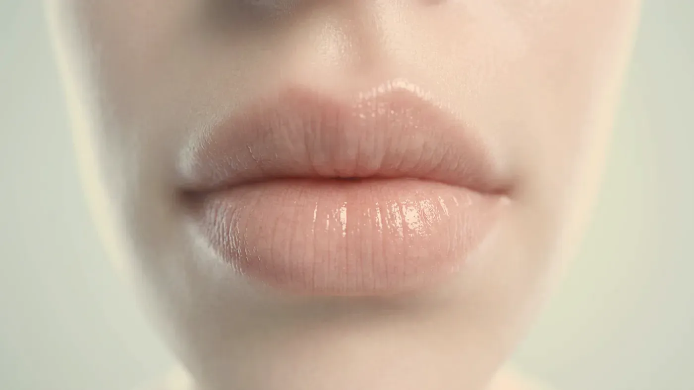
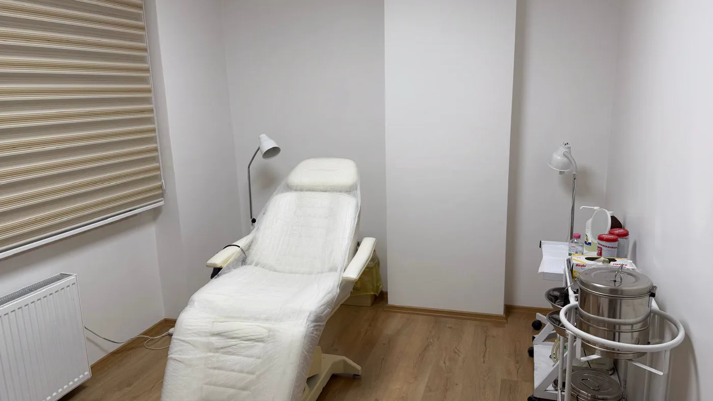

Bölge rehberi · Dudak
Dudakta amaç daha fazlası değil, doğru oran.
Dudağınızın ince göründüğünü, kenarının silikleştiğini ya da sürekli kuruduğunu düşünüyor olabilirsiniz; bu üç yakınmanın kaynağı da çözümü de birbirinden farklıdır. Çoğu zaman gereken daha çok ürün değil, üst ve alt dudak arasındaki dengenin korunmasıdır. Ölçüyü bir fotoğraf ya da moda değil, yüzünüzün kendi oranları belirler; kimi durumda en doğru adım hiçbir şey eklememektir.

Temsilî görsel · yapay zekâ ile üretildiAyrım
Dudakla ilgili yakınma hangi konuya giriyor?
Muayeneye gelenlerin çoğu “dudaklarım çok ince” diyerek söze başlar; yakından bakıldığında ise sorun sıklıkla kenar çizgisinde ya da yüzeyin kuruluğunda çıkar. Üç konu aynı kişide bir arada olabilir. Hangisinin ağır bastığı anlaşılmadan plan yazmayız.
 Temsilî görsel · yapay zekâ ile üretildi
Temsilî görsel · yapay zekâ ile üretildi
Gövdedeki dolgunluk
Kimi dudaklar doğuştan incedir, kimileri yıllar içinde dolgunluğunu yitirir. Bu konuda iki ölçüye bakarız: üst dudağın alt dudağa oranı ve dudak genişliğinin yüz genişliğine göre durumu. Kullanılacak miktarın üst sınırını bu iki ölçü çizer.
Dudağın kenar çizgisi
Dudakla deri arasındaki ince sınır zamanla silikleşebilir; böyle olunca dolgunluk yerinde olsa bile dudak dağınık bir görünüm alır. Bu yakınmaya gövdeyi büyüterek yanıt vermek yanlış olur. Çalışılan yer yalnızca kenar hattıdır ve burada çok küçük miktarlarla yetinilir.
Kuruluk ve dikey kırışıklar
Dudakların sık kuruması, kabuk bağlaması ve üzerinde dikine uzanan ince çizgiler bu konuya girer. Sigara içmek, dudağı güneşten korumamak, ağızdan nefes alma alışkanlığı ve bazı ilaçlar kuruluğu artırır. Buradaki hedef dudağı büyütmek değil, yüzeyi nemli ve korunaklı tutmaktır.
Ölçü
Dudağınız için doğru oranı ne belirler?
Başka birinden ya da bir fotoğraftan alınan ölçü, sizin yüzünüzde aynı sonucu vermez. Oranı sizin yüzünüzün kendi çizgileri belirler.
Üç ölçü, tek karar
Muayenede üç şeye birlikte bakarız: iki dudağın birbirine göre dolgunluğu, dudağın yüz genişliği içinde kapladığı yer ve yandan bakıldığında burun ucu ile çene ucu arasındaki konumu. Bu üçü aynı yönü gösterdiğinde nerede durulacağı da kendiliğinden anlaşılır.
Alttaki dudağın bir parça dolgun olması sık görülür
Pek çok kişide alttaki dudak, üsttekine göre bir parça daha dolgundur. Bu değişmez bir kural değil, yalnızca sık rastlanan bir eğilimdir; tersi de uyumlu durabilir. Amacımız ideal sayılan bir orana ulaşmak değil, sizin dudağınızdaki dengenin korunmasıdır.
Yandan bakış çoğu zaman unutulur
Karşıdan dolgun ve uyumlu görünen bir dudak, profilden bakıldığında fazla öne çıkmış olabilir. Kararı bu yüzden tek bir ön fotoğrafa dayandırmayız; dudağı en az iki farklı açıdan inceleriz.
Dudak tek başına okunmaz
Ağız köşelerindeki çöküklük, çene ucunun ne kadar önde olduğu ve elmacıktaki destek, dudağın nasıl algılandığını doğrudan etkiler. Bu bağlantıyı yüz bölgesi planlaması sayfasında ayrıntılı anlattık.
Sınır
Dudak neden fazla dolgun görünür ve bu nasıl önlenir?
Fazla dolgun bir dudak çoğunlukla tek bir seansın değil, birbiri ardına eklenen seansların sonucudur. Bunu önlemek için miktarı küçük tutmak kadar seansları seyrek planlamak ve her seferinde dudağa yeniden bakmak gerekir.
Eskisi dururken yenisi
Önceki seanstan kalan ürün hâlâ dokudayken yeni bir seans yapılırsa toplam miktar fark edilmeden artar. Bu yüzden “zamanı geldi” diye otomatik tekrar yapmayız; yeni bir seanstan önce dudakta ne kadar ürün kaldığını muayeneyle anlamaya çalışırız.
Şişken hâline bakıp eklemek
İşlemden hemen sonra dudak şiş olduğu için gerçek sonuç henüz görünmez. Bu dönemde “yeterince olmamış” deyip üzerine eklemek sık yapılan bir yanlıştır; karar, şişlik tamamen indikten sonra verilir.
Ürünün kenarı aşması
Ürün dudak gövdesinin sınırından dışarı taşarsa dudak dolgun değil kabarık görünür, kenar çizgisi de bulanıklaşır. Bunu önlemek için kenar ve gövde ayrı planlanır; kenara çok daha az ürün konur.
"En güvenli yol, işe az miktarla başlayıp adım adım ilerlemektir; geri dönmesi güç bir noktaya gelmeden durabilmek de planın içindedir."
Şu anki dudağınızı fazla dolgun buluyorsanız yanıt yeni bir işlem değildir. Hyalüronik asit içeren dolgular, gerekli görüldüğünde enzimle eritilebilir; bu seçeneğin riskleri ve hangi durumlarda düşünüldüğü dolgu uygulamaları sayfasının istenmeyen durumlar bölümünde anlatılıyor.
Seçenekler
Dudak için hangi seçenekler konuşulabilir?
Listedeki seçenekler, muayenede uygun bir tablo görüldüğünde konuşulur. Çoğu başvuruda bunlardan yalnızca biri gerekir; kimi görüşmeler hiçbir işlem konuşulmadan biter.
Dolgu uygulamaları
Hacim / kenarİlk hafta→Gençlik aşısı (skinbooster)
Nem / yüzeyMuayenede belirlenir→Mezoterapi
Nem / yüzeyMuayenede belirlenir→Somon DNA ve polinükleotid
DokuMuayenede belirlenir→Botulinum toksin
Kas kaynaklıMuayenede belirlenir→Sıvı yüz germe
Çevre desteğiMuayenede belirlenir→
Dolgu uygulamaları
Hacmin azaldığı ya da kenarın silikleştiği tabloda düşünülür; dudak için yumuşak kıvamlı, dokuya uyum sağlayan ürünler seçilir.
Sayfasına git →Süreç ve uygunluk
Dudak planı hangi adımlarla yapılır, kimlere uygun değildir?
- Beklentinizi dinlemek. Görüşme, sizin ne istediğinizi dinlemekle başlar. Başka birinin dudağına benzeme isteği karşılanabilecek bir beklenti değildir; ölçüyü sizin yüzünüz belirler.
- Üç konuyu ayırmak. Dolgunluk, kenar ve nem ayrı ayrı not edilir. Üst dudağın boyu, konuşurken görünen diş miktarı, ağız köşelerinin yukarı mı aşağı mı baktığı ve profil ölçüleri de kaydedilir; iki yarım arasında hafif bir fark çoğu insanda doğaldır.
- Sağlık öyküsü. Daha önce yapılan işlemleri, uçuk sıklığınızı, kan sulandırıcı kullanıp kullanmadığınızı, gebelik ya da emzirme durumunu sorarız; bilinen aşırı duyarlılıklarınızı belirtin. Sık uçuk çıkıyorsa işlemden önce koruyucu önlem planlanır.
- Az miktarla, basamak basamak. Hedefe tek seansta varmaya çalışmayız. Küçük bir miktarla başlar, şişliğin inmesini bekler, ihtiyaç kalırsa ikinci seansı ondan sonra konuşuruz.
- Yazılı bilgilendirme ve kontrol. Amaçlanan etkiyi ve görülebilecek istenmeyen durumları yazılı olarak alırsınız; onamınız olmadan işleme geçilmez. Kontrol randevusu şişliğin geçeceği bir tarihe verilir.

Uygulama yapılmayan durumlar
- Gebelik ya da emzirme
- Dudakta ya da çevresinde etkin uçuk, enfeksiyon veya açık yara
- Kullanılacak içeriğe karşı daha önce görülmüş aşırı duyarlılık tepkisi
- Yüzün kendi oranlarını aşmayı hedefleyen istekler
- Dudakta zaten sınıra ulaşmış miktarda ürün bulunması
Ertelenen ya da ayrıca planlanan durumlar
- Sık tekrarlayan uçuk — koruyucu önlem alınmadan işlem yapılmaz
- Yeni yapılmış bir diş tedavisi ya da geçirilmiş enfeksiyon
- Kan sulandırıcı ilaç ya da pıhtılaşma sorunu
- Dudağa daha önce konmuş, içeriği bilinmeyen ürün
- Önemli bir güne yalnızca birkaç gün kalmışken yapılan başvurular
İşlemden sonraki ilk iki gün dudağın belirgin biçimde şişmesi olağandır ve bu, sonucun son hâli değildir; şişliğin büyük kısmı çoğunlukla bir hafta içinde iner. İlk gün dudağınıza bastırmamanızı, ovmamanızı, ruj ve makyaj kullanmamanızı öneririz. İlk gün çayınızı, kahvenizi ve yemeğinizi ılık tüketmeniz, sauna ile ağır sporu da birkaç gün ertelemeniz iyileşmeyi kolaylaştırır. Bütün uygulamalar için geçerli öneriler uygulama sonrası takip sayfasında toplandı.
İşlemden sonraki günlerde giderek artan şiddetli ağrı, dudakta ya da çevresinde beyazlaşma veya morumsu ağ görünümü, hızla büyüyen şişlik, ateş ya da görmede değişiklik olursa bizi 0539 933 08 08 numarasından hemen arayın. Telefonla ulaşamazsanız 112 Acil Çağrı Merkezi’ni arayın ya da en yakın hastanenin acil birimine başvurun.
Soru–cevap
Aklınızdaki soruyu seçin, yanıtı yanda okuyun
Bir adım ötesi
Dudağınız için ölçülü bir plan yapalım
Cevizlik Mah. Ebuzziya Cad. No:47/1, Bakırköy / İstanbul — muayenede dolgunluğu, kenarı ve nemi tek tek inceliyor, bir işleme gerçekten ihtiyaç olup olmadığına birlikte karar veriyoruz.
Metni hazırlayan ve tıbbi açıdan gözden geçiren: Uzm. Dr. Rahmi Cebeci (Aile Hekimliği Uzmanı · Medikal Estetik Sertifikalı).
Buradaki anlatım herkese yöneliktir; size özel bir teşhis ya da tedavi planı sunmaz, muayenenin yerini tutmaz. Her uygulamanın etkisi kişiye göre farklı olur.